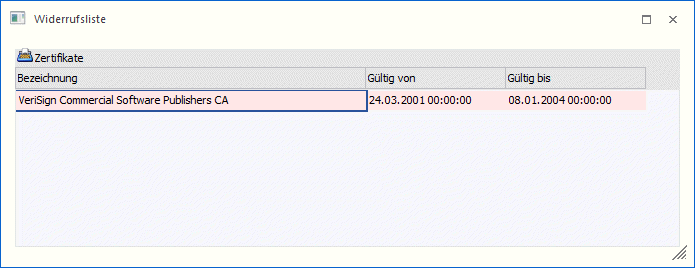
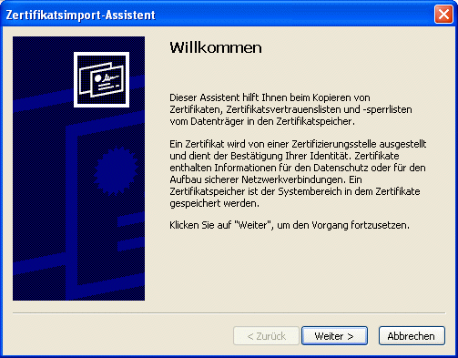
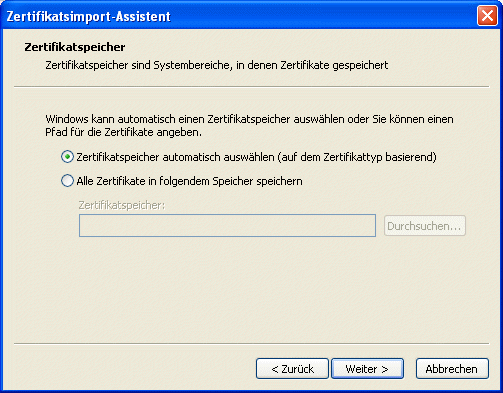
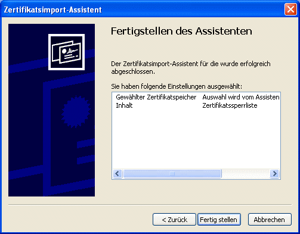
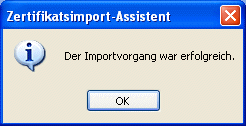

Wird der Menüpunkt "Widerrufsliste" manuell aufgerufen so dient er einerseits zur Kontrolle ob es bereits Widerrufslisten zur Überprüfung der Gültigkeit von Zertifikaten in der WinLine gibt, und andererseits ob bereits vorhandene Listen noch Gültig sind oder event. bereits abgelaufen sind.

Beim Import von XML-Dateien bzw. beim Einlesen dieser im Signaturserver-Import wird ebenfalls geprüft ob die so genannten Widerrufslisten zu den zu importierenden Signaturen aktuell sind.
D.h. importiert soll eine Datei werden die mit einem Zertifikat von z.B. A-CERT versehen ist. Nun wird geprüft ob bereits eine Widerrufsliste zu diesem Zertifikat vorhanden ist bzw. ob diese Liste noch Gültigkeit hat. Ist eine Liste vorhanden und besitzt diese Liste noch Gültigkeit, wird dieser Menüpunkt nicht automatisch beim Import geöffnet. Ist diese Liste nicht vorhanden oder nicht aktuell, so wird versucht diese Liste zu aktualisieren (aktuelle Listen zu importieren).
Dazu wird der Zertifikatsimport-Assistent aufgerufen, in dem die einzelnen Schritte mit "Weiter" sowie der letzte Schritt mit "Fertigstellen" bestätigt werden müssen:




Aktuelle Widerrufslisten sind daran zu erkennen dass diese als "grüne Zeile" dargestellt werden, ungültige als rot hinterlegte Zeilen.
Buttons
Ø  OK
OK
Wurde eine Widerrufsliste neu importiert, so kann durch Drücken des OK-Buttons die Anzeige in der Tabelle aktualisiert werden.
Ø  Ende
Ende
Durch Drücken des Ende-Buttons wird das Fenster geschlossen (nach erfolgtem Import neuer/aktueller Listen wird dadurch wieder zurück in den Signaturserver-Import gewechselt).